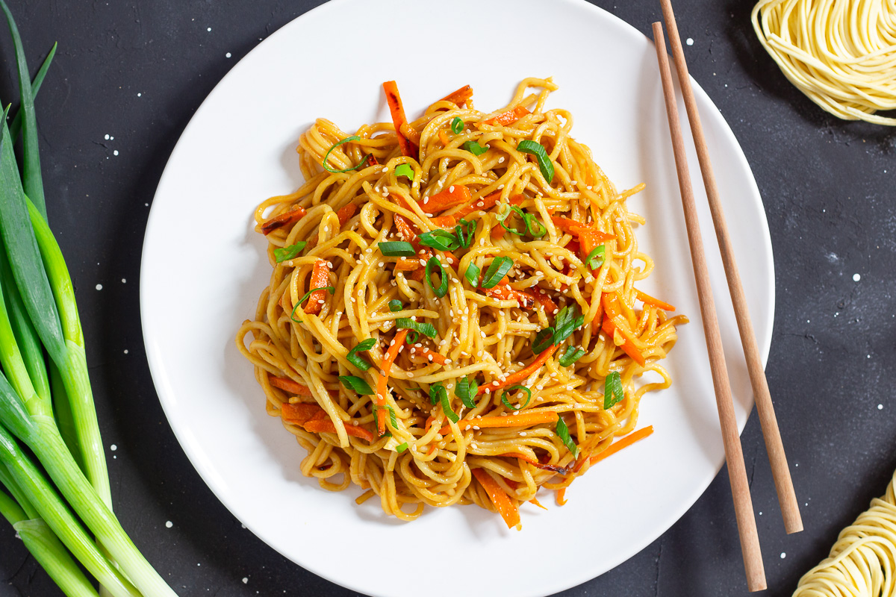

noodles

This tuna noodle casserole is the best with a classic creamy taste from my
childhood. The sauce is rich and creamy but not overwhelmingly heavy. The
crunch from the topping and fresh bite from the parsley create the perfect
balance. Let's not forget that this is a great budget-friendly meal to feed a
crowd!
Ingredients
- 1 (12 ounce) package egg noodles
- 4 ¼ teaspoons kosher salt, divided
- 4 tablespoons salted butter, divided
- teaspoons olive oil, divided
- 1 (8 ounce) package sliced fresh mushrooms
- 1 small white onion, minced
- ¼ cup all-purpose flour
- 2 cups milk
- 1 ½ cups chicken stock
- 2 tablespoons lemon juice
- 1 teaspoon Dijon mustard
- ½ teaspoon ground black pepper
- 1 ½ cups shredded white Cheddar cheese
- 1 cup frozen sweet peas
- 2 (6 ounce) cans tuna, drained
- 1 cup panko bread crumbs
- ¼ teaspoon ground paprika
- 2 tablespoons finely chopped fresh parsley
Steps
- Preheat the oven to 375 degrees F (190 degrees C). Grease a 9x13-inch baking
dish.
- Bring a large pot of water to a boil. Add egg noodles and 3 teaspoons salt to the
boiling water; cook until tender yet firm to the bite, about 6 minutes. Drain
noodles. Return to pot and set aside.
- Heat 2 tablespoons butter and 1 tablespoon oil in a large skillet over medium-
high heat. Add mushrooms and onion and cook until mushrooms are softened
and onions are translucent, about 4 minutes. Add remaining butter; stir
constantly until melted. Sprinkle flour over vegetable mixture and cook, stirring
constantly, for 1 minute. Stir in milk and stock and bring to a simmer, stirring
often. Simmer for 5 minutes. Stir in lemon juice, Dijon mustard, 1 teaspoon salt,
and pepper.
- Add sauce mixture to reserved noodles. Stir in 1 cup Cheddar cheese, peas, and
tuna. Pour mixture into the prepared baking dish and sprinkle remaining
Cheddar cheese over the top.
- Stir together bread crumbs, remaining 2 teaspoons oil, remaining 1/4 teaspoon
salt, and paprika in a small bowl. Sprinkle bread crumb mixture evenly over the
casserole.
- Bake in the preheated oven until golden and bubbly, 25 to 30 minutes. Sprinkle
with parsley and serve.